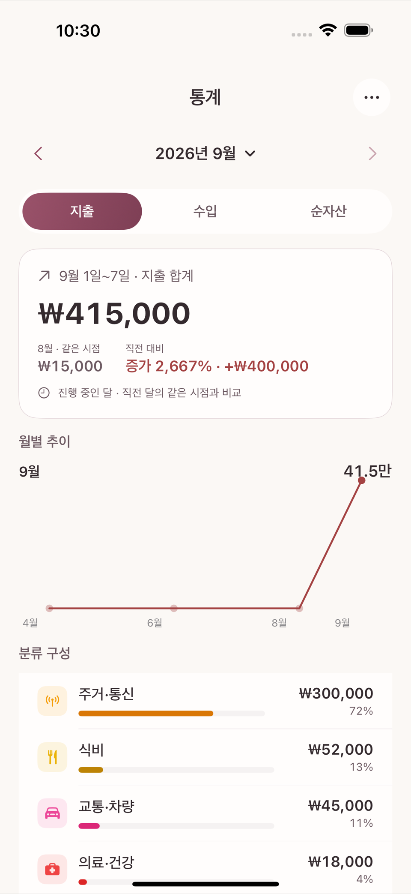
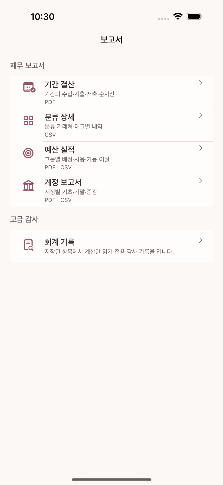
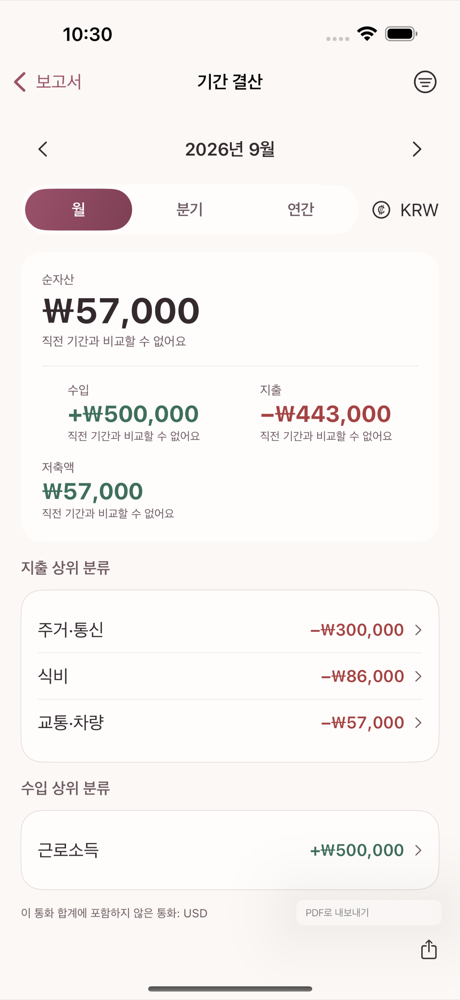

통계 탭은 지출 · 수입 · 순자산 세 관점을 상단 세그먼트로 전환하며 본다. 우측 상단 (또는 상단 바)에서 통계 기간 선택을 열어 볼 기간(주·월·연 등)을 바꿀 수 있다.

보고서 화면에는 네 가지 재무 보고서가 있다.
| 보고서 | 보여주는 것 |
|---|---|
| 기간 결산 | 한 예산 기간이 끝난 뒤의 배정·사용·이월 결과 |
| 분류 상세 | 카테고리별 지출·수입 상세 내역 |
| 예산 실적 | 예산 묶음별 배정 대비 실제 사용 실적 |
| 계정 보고서 | 계정별 잔액·거래 흐름 |
더 깊이 들여다보고 싶다면 고급 감사 섹션의 회계 기록에서 실제 분개(원장) 내역을 거래 단위로 확인할 수 있다. 평소에는 볼 필요가 없는 화면이지만, 숫자가 어떻게 계산됐는지 끝까지 추적하고 싶을 때 유용하다.

네 보고서 화면 모두 상단에 같은 구조의 기간 이동 막대가 있다 — 좌우 화살표로 이전/다음 기간으로 옮기고, 월 · 분기 · 연간 탭으로 단위를 바꾸며, 여러 통화를 쓴다면 통화 선택 메뉴도 같은 줄에 있다.
더 좁혀 보고 싶으면 화면 우측 상단의 필터 아이콘을 눌러 시트를 연다. 이 시트에서 고를 수 있는 것은 거래 종류(지출/수입/이체 등), 계정(자산·부채·수입·지출 계정 중 여러 개 동시 선택), 태그(태그를 하나도 안 썼다면 이 항목 자체가 안 보인다), 가맹점(정확히 일치하는 이름으로 검색)이다. 카테고리 단위로 좁히는 필터는 없다 — 카테고리별로 보고 싶다면 "분류 상세" 보고서 자체가 그 역할을 한다.
보고서 화면 상단의 내보내기 버튼을 누르면 PDF로 내보내기 또는 CSV로 내보내기를 고를 수 있다. PDF는 사람이 읽기 좋은 요약본, CSV는 표 계산 프로그램에서 다시 분석하고 싶을 때 적합하다.
